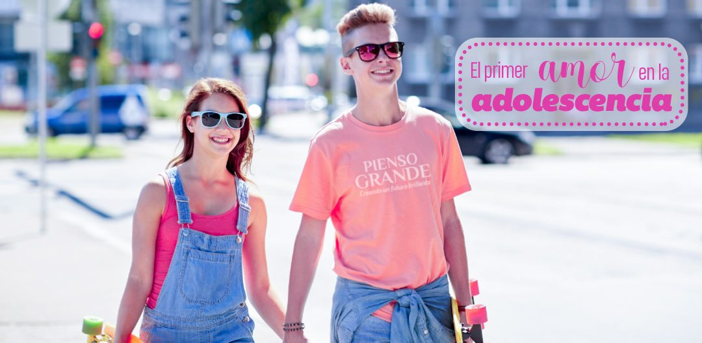

El primer amor en la adolescencia
¿Quién no recuerda su primer amor? Yo por lo menos recuerdo el mío con mucha ternura, fue un amor muy romántico, realmente especial, mi primer beso, mi primera ilusión, tengo hermosas anécdotas de mi primer amor en la adolescencia, y la verdad es que me tome mi tiempo para reconocer si quería o no tener un novio, tener claro si era amistad o ameritaba tomar el riesgo de lanzarme a tener mi primer amor.
Cuando se llega a la adolescencia deseamos que nuestro primer amor sea para toda la vida, pues es en esta etapa cuando sentimos por primera vez el amor romántico, yo les puedo decir que mi primer amor si ha durado para toda la vida, sentimos un fuerte amor el uno por el otro, pero como grandes amigos.
Ustedes se preguntarán porque les cuento esto, pues porque hace parte de las estrategias para comprender a nuestros hijos, ponernos en su lugar cuando se enfrentan a su primera ilusión, recordar que para nosotros también fue muy importante. Debemos hablar con ellos de una manera que se sientan comprendidos y que lo que le digamos lo acepten y reflexionen para tomar sus propias decisiones.
En la adolescencia en la gran mayoría de los adolescentes se despierta un nuevo sentimiento, empezamos a sentir por primera vez el amor romántico, ese que se siente por la persona que será tu pareja, nuestro hijo experimenta por primera vez lo que es estar enamorado, lo que despierta en la gran mayoría de los padres ciertas alarmas, los temores y las dudas empiezan a salir a flote. De hecho, muchos cuestionan que su hijo este realmente enamorado, porque para ellos a esa edad no saben lo que es el amor. Y es de eso precisamente que debes hablarle, antes de poner tus dudas y temores en primer lugar.
Nuestro rol como padres es orientar a nuestros hijos, cuando hablemos de las relaciones debemos tener muy claro el tema, hablar sobre el amor propio (autoestima) el valor que tienen como persona, organizar las prioridades en su vida y además la responsabilidad que implica empezar una relación. Siempre nuestro principal objetivo debe ser comprender y al mismo tiempo proporcionar información valida y confianza.
Hablemos del amor en la adolescencia ¿Qué es el amor?
En el tema del amor existen varios conceptos e investigaciones que lo definen, pero en general el amor es el sentimiento que nos inclina hacia una persona de forma positiva que nos hace desearle el bien.
El psicólogo Robert Sternberg, en su teoría triangular del amor, describe los diferentes componentes que integran al amor y como esas combinaciones originan los diferentes tipos de relaciones.
Los tres elementos de la teoría triangular son:
Pasión
Es el deseo sexual o romántico que existe en la pareja. Aunque involucra la atracción física, también es el deseo de compartir con el otro aspectos de su vida, no se limita solo a la sexualidad.
Intimidad
Es la cercanía, la conexión emocional, el afecto, la confianza, preocupación por el bienestar del otro.
Compromiso
Es la responsabilidad compartida de mantener el amor superando las adversidades y disfrutando los buenos momentos, es la visión de un futuro juntos.
Cuando se combinan estos componentes se forman los diferentes tipos de relaciones.
7 formas de amar:
El psicólogo Sternberg, anteriormente citado las define así:
Cariño:
Es una relación de gran cercanía con el otro, existe Intimidad, pero no hay ni pasión ni compromiso. En este tipo de relaciones se encuentra la amistad.
Encaprichamiento:
Es una relación que se basa solo en la pasión, no hay intimidad ni compromiso. Estas relaciones suelen ser superficiales y pasajeras.
Amor vacío:
Es una relación que se mantiene por interés, hay compromiso regularmente de ambas partes, se ha perdido o no existe la confianza y deseo sexual, no hay pasión ni intimidad.
Amor romántico:
Hay pasión e intimidad, lo que hace que la pareja desee estar unida, pero no hay compromiso.
Amor sociable:
Existe intimidad y compromiso, pero no hay pasión. En este tipo de relaciones se basa en la amistad ya que han perdido o no existe la atracción sexual.
Amor fatuo:
Existe el compromiso y la pasión, pero se ha perdido la intimidad, generalmente se ha perdido la confianza o en algunos casos es una relación que no tiene muchas afinidades.
Amor consumado:
Como su nombre lo indica en este tipo de amor existen los tres componentes: pasión, intimidad y compromiso. Es el tipo de amor que todos buscamos, pero que requiere de mucho trabajo para mantenerlo en el tiempo.